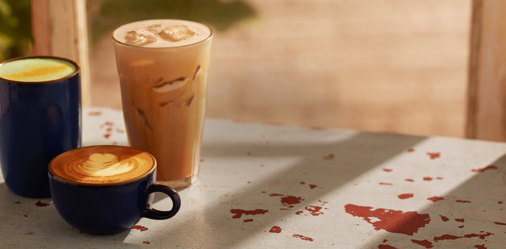
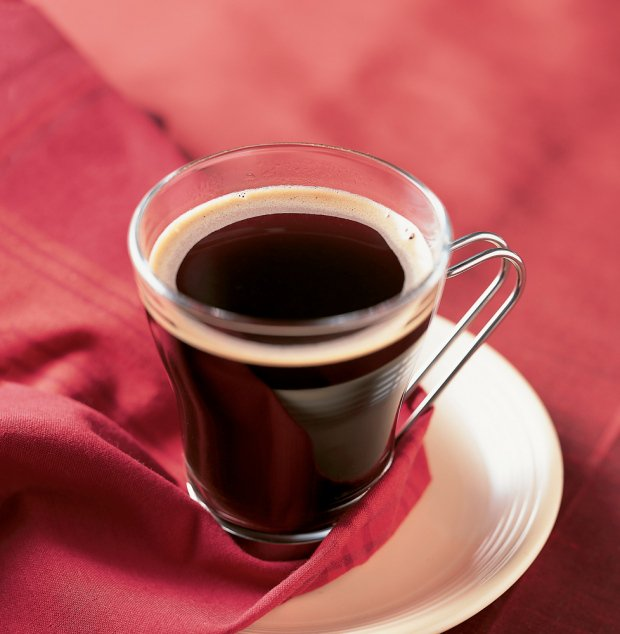
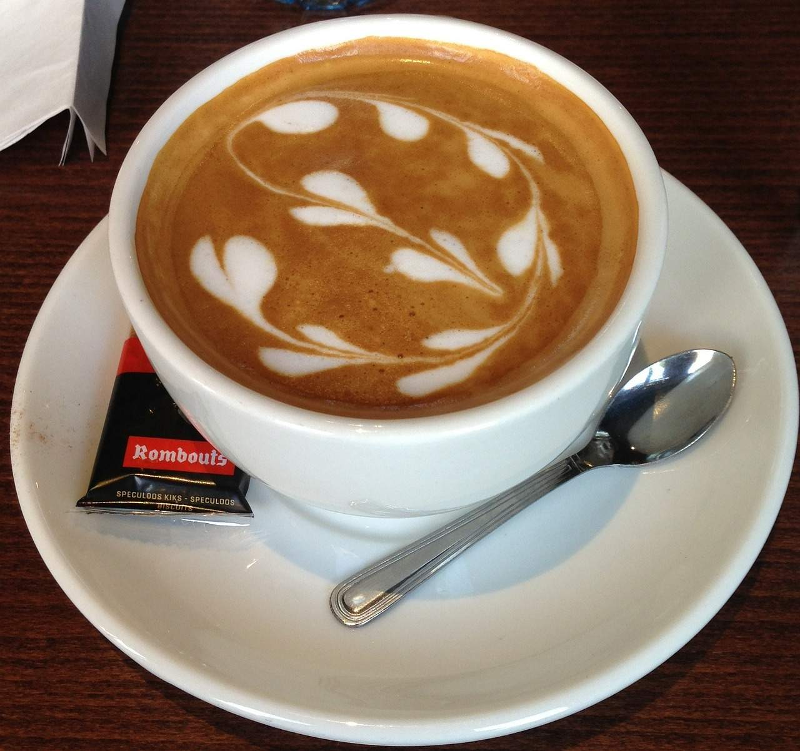

ursCoffeeHub

Caffè Americano

You can make this type of coffee quite simply by adding hot water to a shot of espresso coffee. It has been said that American soldiers during the Second World War would make this type of coffee to make their beverages last longer. It was then (apparently) adopted by American baristas after the war.
Cappuccino

Possibly the most popular type of coffee in the world, a cappuccino consists of three layers (kind of like a cake). The first is a shot of espresso, then a shot of steamed milk, and finally the barista adds a layer of frothed, foamy milk. This final layer can also be topped with chocolate shavings or powder. Traditionally, Italians would consume this type of coffee at breakfast.
Espresso
To make an espresso, shoot boiling water under high pressure through finely ground up coffee beans and then pour into a tiny mug. Sounds simple right? Well, it’s surprisingly difficult to master. Espressos are the purest coffee experience you can get, and while they’re not for everyone, it can be a truly singular drinking experience when you find a good brew.
Flat White
The two most Kiwi coffees available are the long black and the flat white – as both originated in New Zealand and Australia. For a flat white, the steamed milk from the bottom of the jug (which is usually not so frothy, but rather creamy) is poured over a shot of espresso. It is now popular among mums and dads at school fetes who are desperately trying to stay awake.